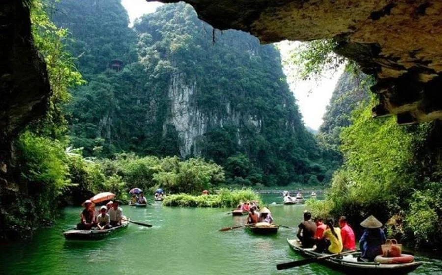
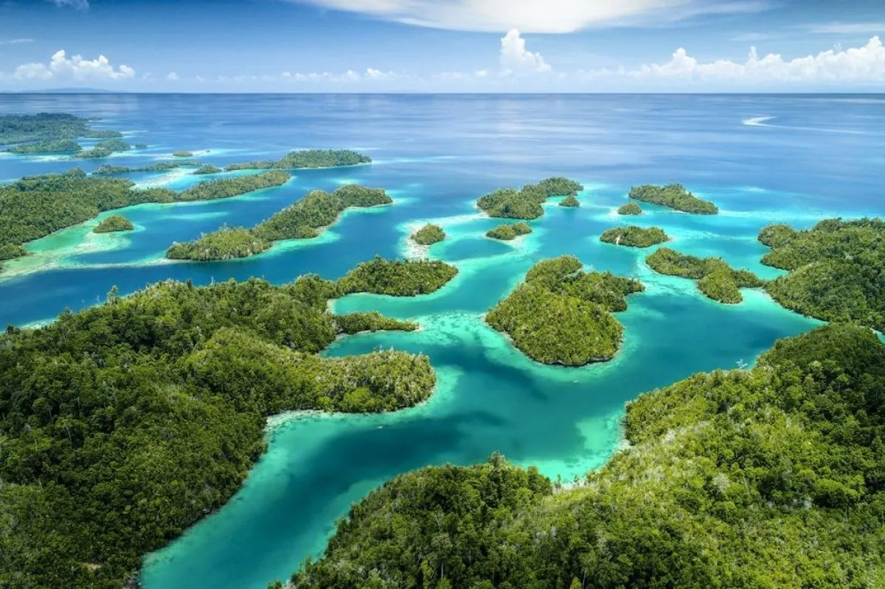
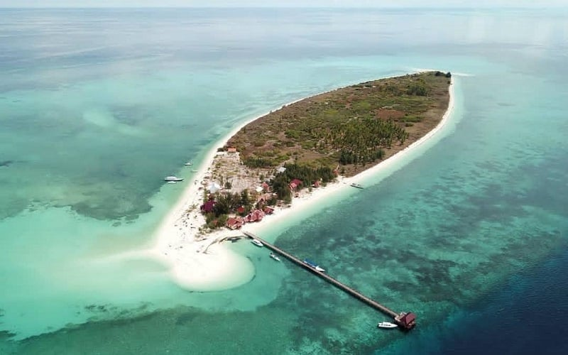
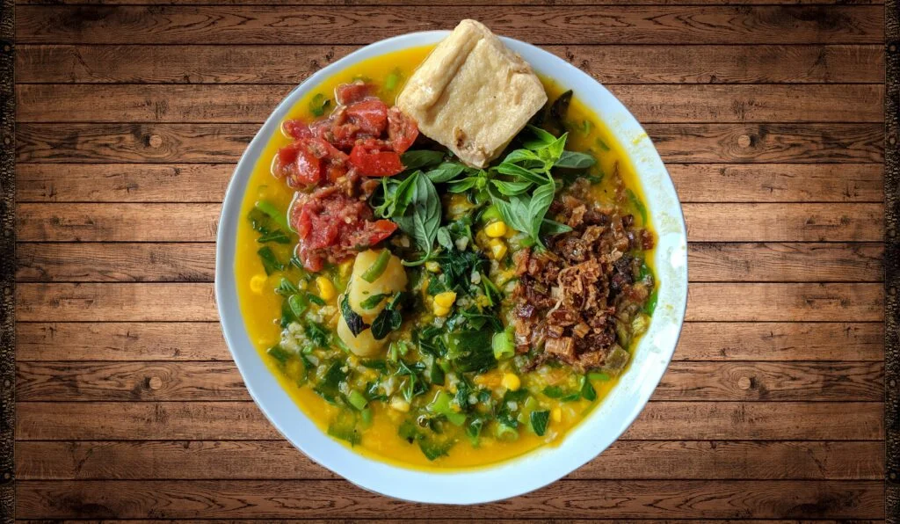
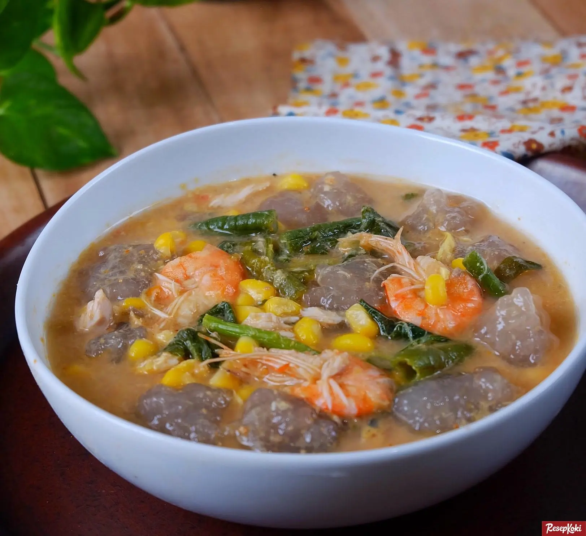
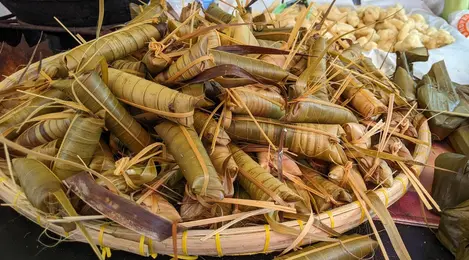

Tentang Pulau Sulawesi
Pulau Sulawesi, yang dikenal dengan bentuk unik menyerupai huruf 'K', adalah salah satu pulau terbesar di Indonesia yang menyimpan kekayaan alam dan budaya yang luar biasa. Pulau ini terbagi menjadi enam provinsi, masing-masing menawarkan pesona yang berbeda, mulai dari keindahan bawah laut yang mendunia hingga tradisi pegunungan yang masih kental. Dikenal sebagai pusat keanekaragaman hayati, Sulawesi adalah rumah bagi spesies endemik dan ekosistem unik yang menjadikannya surga bagi para peneliti dan wisatawan.
✨ Mengapa Memilih Sulawesi?
Sulawesi menawarkan spektrum pengalaman wisata yang lengkap. Bagi pecinta bahari, Anda akan menemukan spot selam terbaik dunia, seperti Bunaken dan Wakatobi, dengan terumbu karang yang masih terjaga dan ribuan spesies biota laut. Sementara itu, bagi penikmat budaya dan petualangan, dataran tinggi Tana Toraja menyajikan arsitektur rumah adat Tongkonan yang megah dan upacara adat yang sarat makna. Keramahan suku Bugis, Makassar, Minahasa, dan Toraja, serta keindahan geologi seperti gugusan Karst Rammang-Rammang, menjadikan Sulawesi sebagai destinasi yang menjanjikan pengalaman autentik dan tak terlupakan.
🗺️ Destinasi Unggulan
Taman Laut Bunaken (Sulawesi Utara)

Taman Nasional yang diakui UNESCO, terkenal sebagai salah satu segitiga terumbu karang dunia. Destinasi wajib bagi penyelam dan *snorkeler* untuk melihat ribuan spesies ikan dan terumbu karang.
Tana Toraja (Sulawesi Selatan)

Kawasan pegunungan yang kaya akan budaya. Tana Toraja terkenal dengan rumah adat Tongkonan yang unik, upacara pemakaman Rambu Solo, dan situs pemakaman batu.
Wakatobi (Sulawesi Tenggara)

Kepulauan yang membentuk singkatan dari Wangi-wangi, Kaledupa, Tomia, dan Binongko. Taman Nasional laut ini adalah surga bawah laut dengan keindahan karang dan biota laut yang memukau.
Rammang-Rammang (Sulawesi Selatan)
Gugusan pegunungan karst terbesar kedua di dunia. Wisatawan bisa menyusuri sungai di antara tebing-tebing kapur yang megah, menawarkan pemandangan alam yang dramatis.
Kepulauan Togean (Sulawesi Tengah)
Terletak di Teluk Tomini, Togean menawarkan pantai berpasir putih dan laut tenang. Tempat yang sempurna untuk bersantai, menyelam, dan bertemu Suku Bajo (manusia perahu).
Pantai Tanjung Bira (Sulawesi Selatan)

Pantai terkenal di Bulukumba dengan pasir putih selembut tepung. Bira juga menjadi tempat pembuatan kapal kayu tradisional Phinisi yang legendaris.
Benteng Fort Rotterdam (Makassar, Sulawesi Selatan)

PBenteng peninggalan Belanda ini merupakan ikon sejarah penting Sulawesi Selatan. Dari sini, wisatawan dapat belajar tentang sejarah kolonial dan budaya lokal Makassar.
Pulau Selayar (Sulawesi Selatan)
Pulau ini memiliki pantai yang masih alami, gua kapur, dan taman laut Takabonerate yang luar biasa. Cocok untuk wisata bahari dan petualangan alam..
Taman Nasional Lore Lindu (Sulawesi Tengah)

Tempat ini menyimpan patung megalitikum purba dan menjadi lokasi penelitian sejarah serta budaya kuno di Sulawesi. Selain itu, Lore Lindu juga memiliki keanekaragaman flora dan fauna endemik.
Makanan Khas Pulau Sulawesi
-
1. Coto Makassar

Sup daging sapi berkuah kental kaya rempah, dimasak dengan kacang tanah halus. Biasanya dinikmati dengan Ketupat atau Burasa.
-
2. Sop Konro

Sup iga sapi dengan kuah berwarna gelap (hitam) dari bumbu kluwak. Rasanya gurih, kuat rempah, dan tekstur dagingnya sangat empuk. Tersedia juga dalam varian Konro Bakar.
-
3. Bubur Manado (Tinutuan)
Bubur sehat khas Manado yang dicampur dengan berbagai sayuran seperti labu kuning, singkong, bayam, dan kemangi. Disantap bersama sambal Rica Roa atau ikan asin.
-
4. Kapurung
Makanan tradisional dari sagu yang dibentuk bulat-bulat, disajikan dengan kuah ikan kuning (atau ayam) yang asam segar, dicampur sayuran, dan kacang.
-
5. Ayam Bakar Dabu-dabu

Ayam panggang disajikan dengan sambal segar khas Sulawesi.
-
6. Lapa-Lapa
Nasi pulut yang dimasak dengan santan dan dibungkus daun kelapa muda.
📸 Galeri Foto Sulawesi